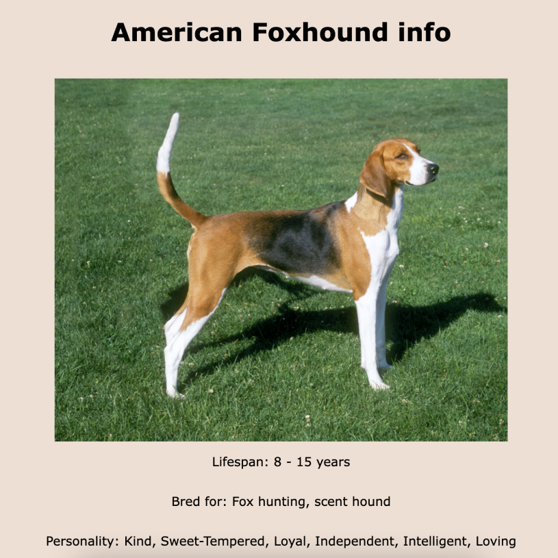
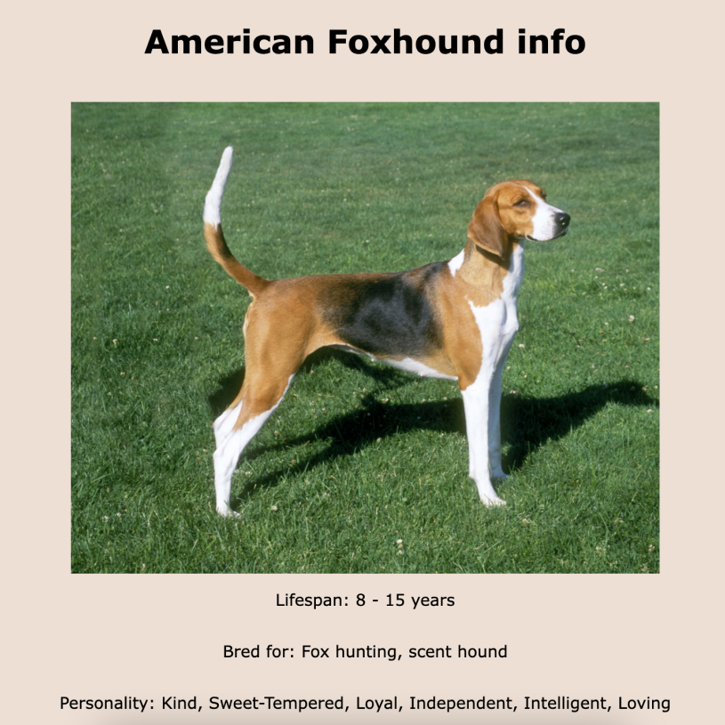

Dog Library
The project
This project is my most recent semester project/exam.
The task
was to create a blog webpage. I chose my photography
business as the theme for this project, simply because I
love
photography and wanted to create something with my own work.


 
